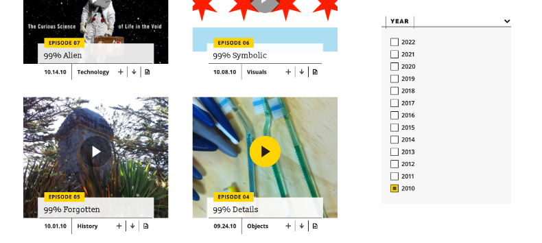
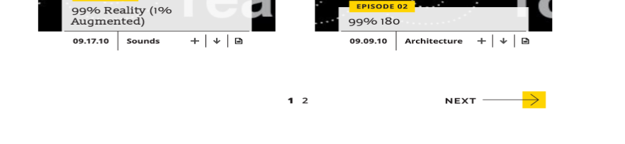
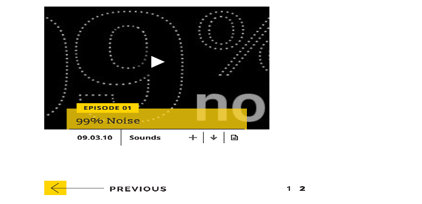
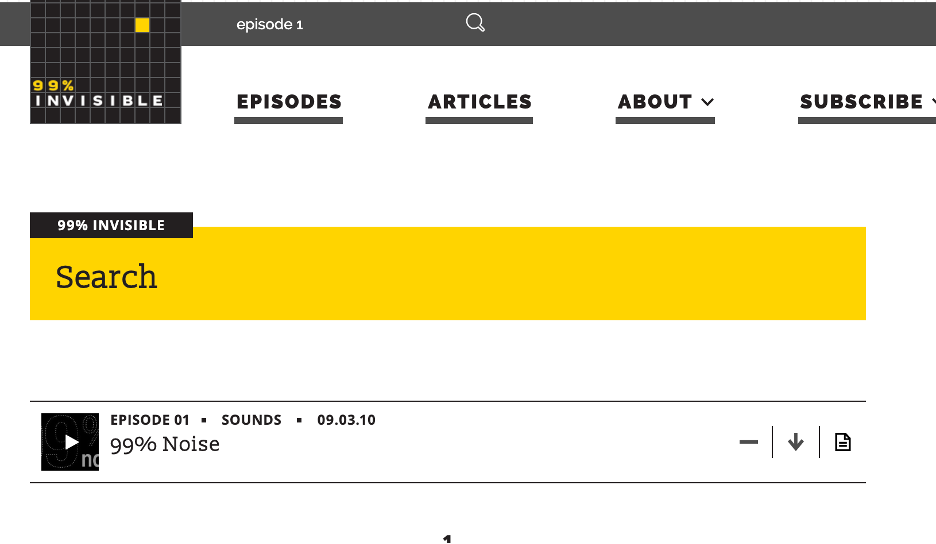

Walkthrough
Begin by entering 99percentinvisible.org into any web browser. When the webpage is opened, a popup to accept/ review cookies appear. An image of this is shown below:
If you click on the highlighted text: 'review our cookie policy here', you are taken to a webpage which contains their privacy policy and their terms of service. Alternatively, when the button “Thanks, got it” shown above is clicked, then that section closes.
Task
The task to be performed is to play the very first episode of the podcast. There are two ways which this can be done.
Method: Navigation through the episodes page
Using the navigation menu on the header, select “EPISODES”. This takes you to a page that has all the episodes attached to it. Using the side section that contains filters for: view options, type, categories, producer, and year, select '2010' which is the minimum year available under the year menu. This page now shows the podcasts that were released in that year. Scroll down to the end of the listed episodes and click 'NEXT'.
You will then be directed to a page with only one podcast (as of April 23rd). The podcast is titled: “99% Noise”. Click on the image.
You can then see a bigger version of the page with text that explains the episode below it. Click on the yellow button on the picture that has a blue sideways triangle to play the episode.
You have successfully played the first episode of the podcast.
Method 2: Using the search bar
An alternative way to achieve this task is to use the search menu item at the top of the header section. Click on the search icon and type in “episode 1” then press enter.
You are then shown the episode you searched for, and you can either click on the episode and follow a similar process as that described in the previous method, or simple press the sideways triangle to listen to the episode of the podcast.
Note: The first method does not work for smaller screens because the webpage is not properly responsive to adapt those features for a smaller screen.